Today, Nov 10th, was the official date of the long-announced “dotnet5 Framework”, and it is described as a major release. Still being new in the developer world myself, I know the basics of ASP.NET 3.7 and 4.5, so I can imagine jumping to a 5.0 release is indeed a big thing.
.NET 5.0 improvements
The biggest improvements announced by the Product Team are:
- Migration-friendly for older .NET versions
- Production-ready from day 1 of release (thorough-tested for http://www.dot.net and http://www.bing.com websites)
- Enhanced performance
- ClickOnce client app publishing
- Smaller container image footprint
- Supportability for Windows Arm64 and WebAssembly (Blazor)
Support will go into Feb 2022, which seems the release date for DotNet 6.0 LTS
Another big deal is the Unification of the DotNet platform; what this means is that the .NET standard and characteristics will be available across different scenarios (mobile apps, web apps, webassembly, desktop apps, IOT,…) relying on the same set of APIs, tools and languages. While not all has been integrated and unified yet, it’s still on the roadmap to become fully unified by version 6.0 in about 18 months from now.
More details about the dotnet 5.0 release can be read in the “announcement blog:”
Developer Environment dependencies
Visual Studio 2019
In order to use the .NET 5.0 Framework, an update of Visual Studio 2019 is required. More specifically, it needs to be version 16.8.0; if all is set as default in your IDE, you should get this prompt to upgrade automatically; if this has been disabled, you could launch the upgrade yourself by starting the Visual Studio Installer from within the Visual Studio menu option Tools / Get Tools and Features…
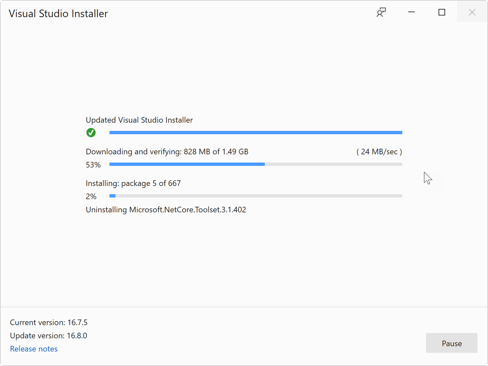
Visual Studio for MAC
Updating to the “latest version” of Visual Studio for MAC should bring in support for .NET 5.0;
Visual Studio Code
Integration of .NET 5.0 into VIsual Studio Code is managed out of the “C# Extension”, so if you update this one to the latest version, you are good to go too.
Creating your first .NET 5.0 Project in Visual Studio
Now the prerequirements have been covered, let’s give it a try and build a new ASP.NET Web Application:
-
From the Visual Studio 2019 menu, select File / New / Project…
-
From the list of templates, select “ASP.NET Core Web Application”
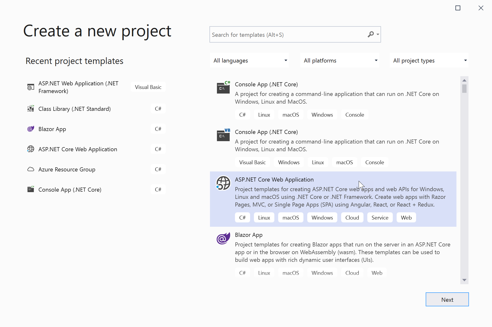
- Press Create; in the next step, from the top, select .NET Core and ASP.NET Core 5.0
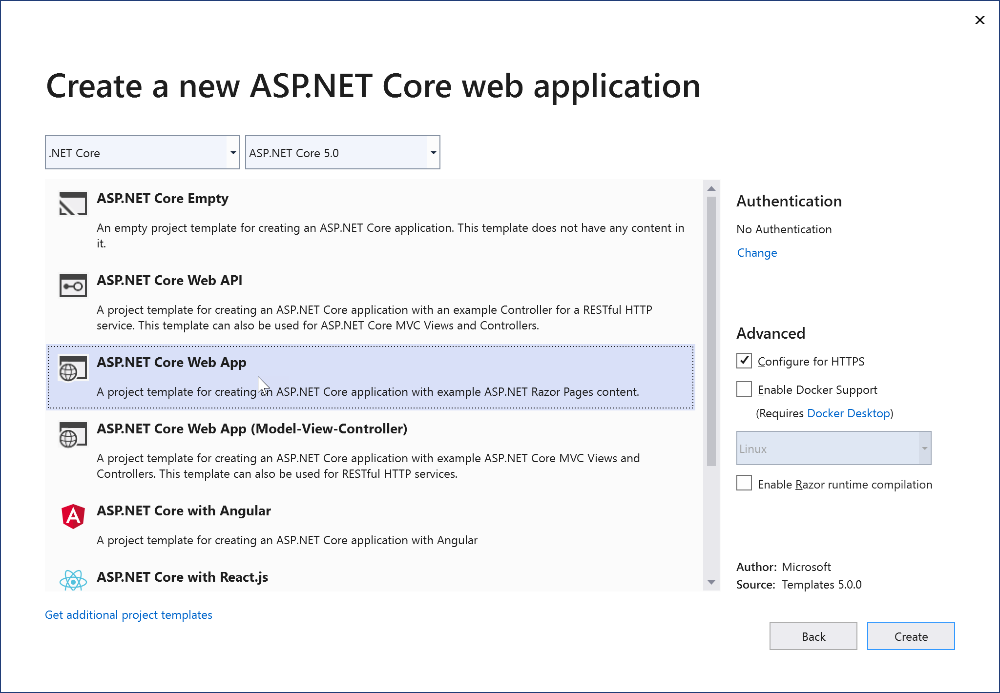
-
Choose ASP.NET Core Web App as template + confirm by pressing the Create button. Wait for the project to load.
-
From Solution Explorer, select the Project you just created (the bold title), and open its Properties; this will also confirm the .NET 5.0 Framework
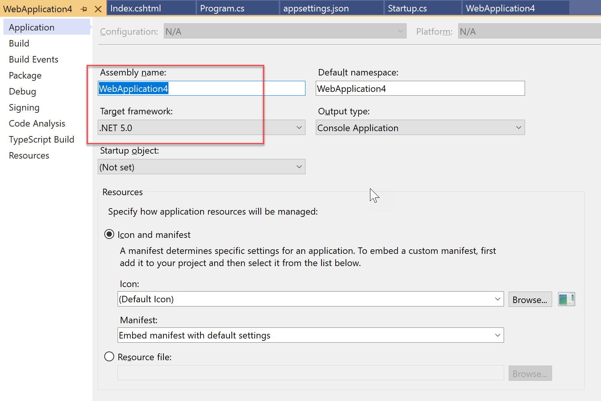
Publishing your Web App to Azure App Services
Developing an app is one thing, but what’s giving more joy than seeing it running in Azure? Here we go:
(Assumptions: you have an active Azure subscription, and the necessary RBAC permissions to create and deploy App Services…)
- From Solution Explorer / select your Project (the bold title), right click to open the context menu, and select publish
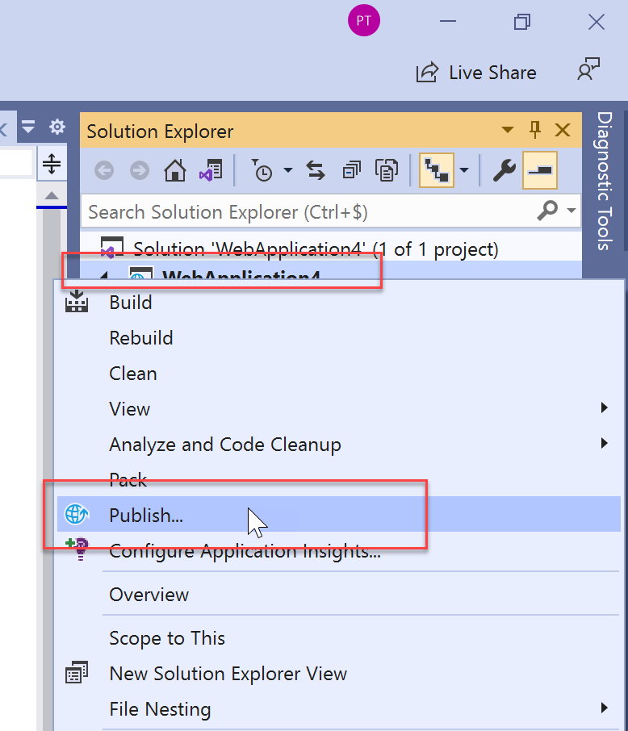
- From the Publish wizard Target step, select Azure; click Next
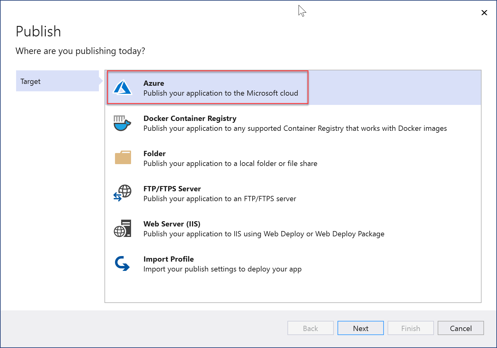
- From the wizard’s Specific Target step, select Azure App Service (Linux); click Next
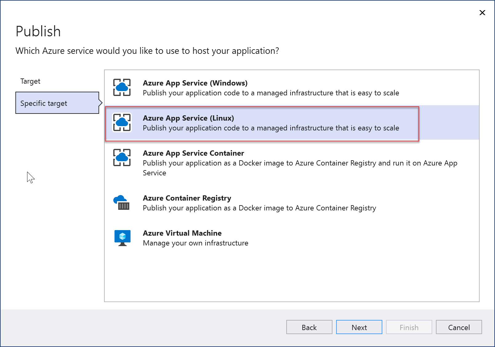
- From the wizard’s App Service step, Click the + sign to **create a new Azure App Service
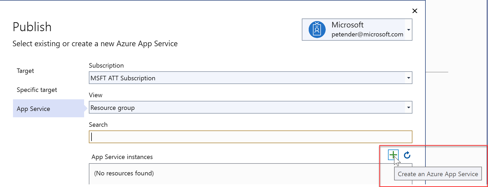
- provide a **unique** name for the webapp, using lowercase characters
- specify a new for a **new Resource Group**
- specify a new **App Service Plan** for example S1 - 1.75Gb Memory
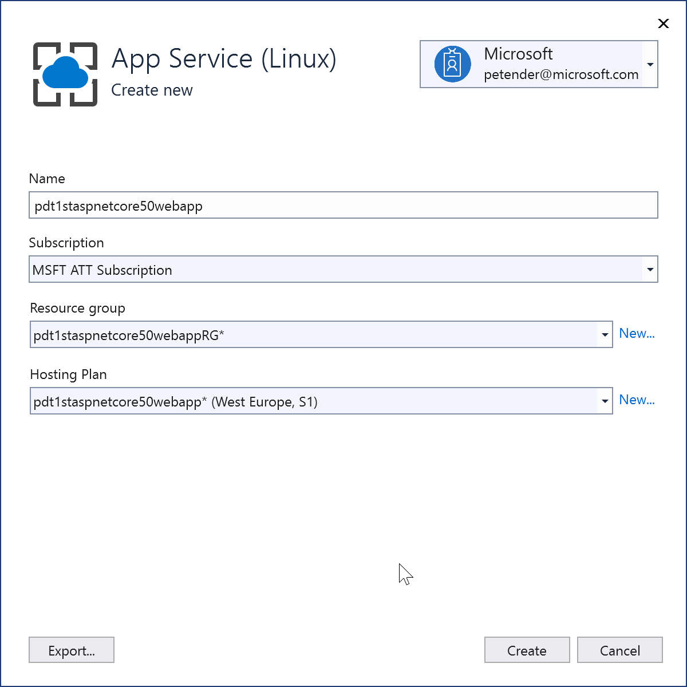
- Validate all the settings, and confirm by pressing Finish
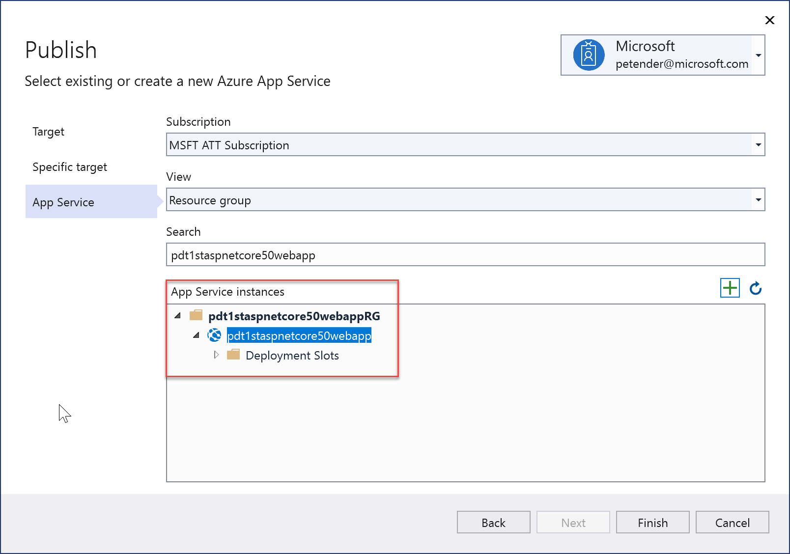
- From the summary page, press Publish; This starts the publishing process.
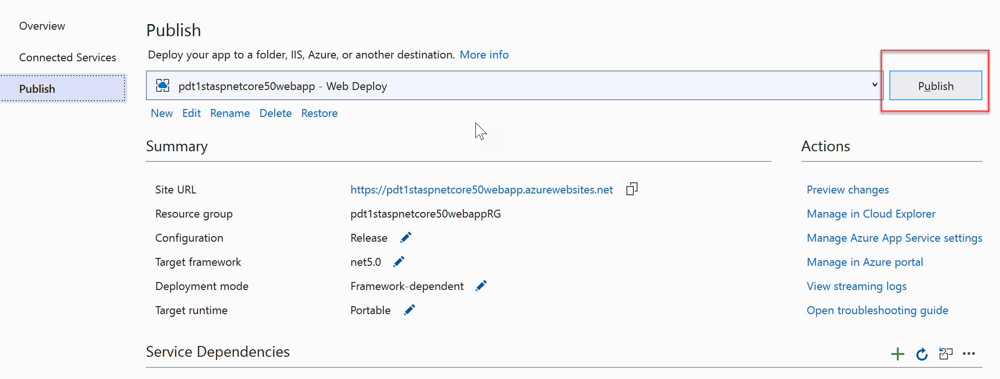
- Wait for it to complete successfully. The process can be viewed from the Output window
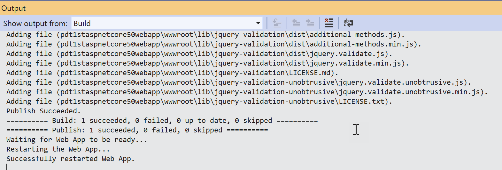
-
After waiting another few seconds, your default browser opens the Web App URL, and shows the web app running
-
Let’s validate the App Service Configuration settings from within the Azure Portal:
- Log on to https://portal.azure.com using your Azure Admin Credentials
- Browse to App Services
- Notice the App Service you just created
- Browse to this App Service’s Configuration (under Settings)
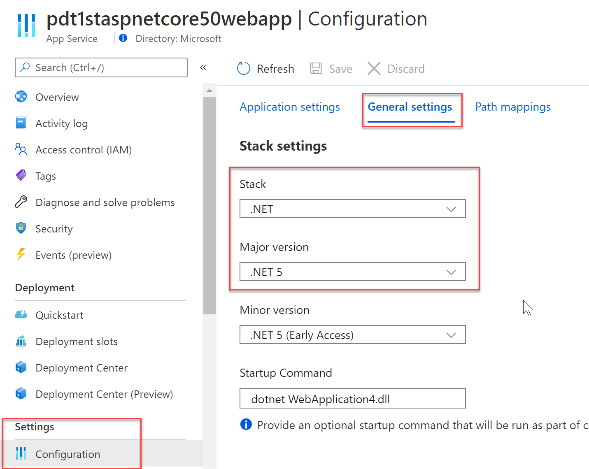
- Notice the correct .NET 5.0 version
Summary
In this article, you got introduced to the new .NET 5.0 Framework. I walked you through the Project setup in VIsual Studio 2019 for an ASP.NET Core 5.0 based web application, followed by publishing this to a new Azure App Service resource.
As always, I hope you learned from this article; ping me whenever you got any (Azure) questions.

Take care, Peter